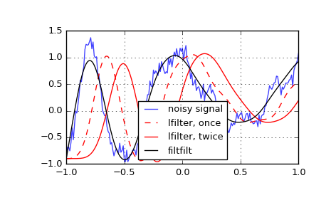

scipy.signal.lfilter¶
-
scipy.signal.lfilter(b, a, x, axis=-1, zi=None)[source]¶ Filter data along one-dimension with an IIR or FIR filter.
Filter a data sequence, x, using a digital filter. This works for many fundamental data types (including Object type). The filter is a direct form II transposed implementation of the standard difference equation (see Notes).
Parameters: b : array_like
The numerator coefficient vector in a 1-D sequence.
a : array_like
The denominator coefficient vector in a 1-D sequence. If
a[0]is not 1, then both a and b are normalized bya[0].x : array_like
An N-dimensional input array.
axis : int, optional
The axis of the input data array along which to apply the linear filter. The filter is applied to each subarray along this axis. Default is -1.
zi : array_like, optional
Initial conditions for the filter delays. It is a vector (or array of vectors for an N-dimensional input) of length
max(len(a), len(b)) - 1. If zi is None or is not given then initial rest is assumed. Seelfilticfor more information.Returns: y : array
The output of the digital filter.
zf : array, optional
If zi is None, this is not returned, otherwise, zf holds the final filter delay values.
See also
lfiltic- Construct initial conditions for
lfilter. lfilter_zi- Compute initial state (steady state of step response) for
lfilter. filtfilt- A forward-backward filter, to obtain a filter with linear phase.
savgol_filter- A Savitzky-Golay filter.
sosfilt- Filter data using cascaded second-order sections.
sosfiltfilt- A forward-backward filter using second-order sections.
Notes
The filter function is implemented as a direct II transposed structure. This means that the filter implements:
a[0]*y[n] = b[0]*x[n] + b[1]*x[n-1] + ... + b[M]*x[n-M] - a[1]*y[n-1] - ... - a[N]*y[n-N]
where M is the degree of the numerator, N is the degree of the denominator, and n is the sample number. It is implemented using the following difference equations (assuming M = N):
a[0]*y[n] = b[0] * x[n] + d[0][n-1] d[0][n] = b[1] * x[n] - a[1] * y[n] + d[1][n-1] d[1][n] = b[2] * x[n] - a[2] * y[n] + d[2][n-1] ... d[N-2][n] = b[N-1]*x[n] - a[N-1]*y[n] + d[N-1][n-1] d[N-1][n] = b[N] * x[n] - a[N] * y[n]
where d are the state variables.
The rational transfer function describing this filter in the z-transform domain is:
-1 -M b[0] + b[1]z + ... + b[M] z Y(z) = -------------------------------- X(z) -1 -N a[0] + a[1]z + ... + a[N] z
Examples
Generate a noisy signal to be filtered:
>>> from scipy import signal >>> import matplotlib.pyplot as plt >>> t = np.linspace(-1, 1, 201) >>> x = (np.sin(2*np.pi*0.75*t*(1-t) + 2.1) + ... 0.1*np.sin(2*np.pi*1.25*t + 1) + ... 0.18*np.cos(2*np.pi*3.85*t)) >>> xn = x + np.random.randn(len(t)) * 0.08
Create an order 3 lowpass butterworth filter:
>>> b, a = signal.butter(3, 0.05)
Apply the filter to xn. Use lfilter_zi to choose the initial condition of the filter:
>>> zi = signal.lfilter_zi(b, a) >>> z, _ = signal.lfilter(b, a, xn, zi=zi*xn[0])
Apply the filter again, to have a result filtered at an order the same as filtfilt:
>>> z2, _ = signal.lfilter(b, a, z, zi=zi*z[0])
Use filtfilt to apply the filter:
>>> y = signal.filtfilt(b, a, xn)
Plot the original signal and the various filtered versions:
>>> plt.figure >>> plt.plot(t, xn, 'b', alpha=0.75) >>> plt.plot(t, z, 'r--', t, z2, 'r', t, y, 'k') >>> plt.legend(('noisy signal', 'lfilter, once', 'lfilter, twice', ... 'filtfilt'), loc='best') >>> plt.grid(True) >>> plt.show()
